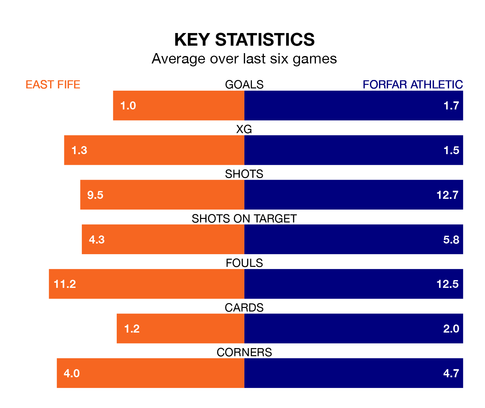

Struggling Forfar Athletic face East Fife away at the MGM Timber Bayview Stadium on Saturday looking to build on a win in their last league outing.
After securing all three points with a 2-0 victory over Clyde on Tuesday, the Loons sit seventh in League Two.
They travel to play an East Fife side sixth in the standings, who also won their last match, 2-0 against Bonnyrigg Rose Athletic, on February 17.
With Marc McCallum between the sticks, Forfar can rely on one of the league's safest pair of hands. He has kept nine clean sheets in his 25 appearances this season, and only one other 'keeper – Stenhousemuir's Darren Jamieson – has been able to prevent the opposition scoring on more occasions in League Two.
In East Fife's net, Allan Fleming has seven clean sheets in 25 games.
In the last 10 years, East Fife and Forfar have played each other on 24 occasions. East Fife won 14 of them, Forfar seven, and they drew three times.
On average, the Fifers scored 1.5 goals and the Loons 1.1 in those matches.
Their last meeting was on December 30, when they played out a 0-0 draw.
With 28 goals in 25 games so far this season, Athletic are scoring at below the league average rate with 1.1 goals per game. But they are conceding fewer than average too, letting in 31 goals at a rate of 1.2 per game.
The Fifers are also below average scorers, with 1.2 goals per game, compared to a league average of 1.3. They have conceded 1.3 goals per game.
The hosts are in mixed form in League Two, with two wins and two draws from their last six games.
With three wins and three draws over that period, the Loons' form is better – they have taken 12 points from 18, compared to East Fife's eight.
Saturday's match will be refereed by Lloyd Wilson, who has taken charge of two League Two games so far this season, issuing no red cards and booking nine players. He has awarded one penalty.
He is yet to oversee a match featuring either East Fife or Forfar this season.
Updated: 10:08 (UTC), 23/02/24